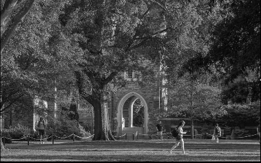
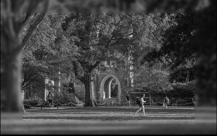

Concept
When applying filters to an image using convolution it is not currently possible to apply the filter at the boundary of the image and they must be dealt with in a different way. This is because when applying a convolutional filter, each pixel is determined from a function of the surrounding pixels and the filter. If any of the surrounding pixels are missing, as is the case for boundary pixels, the convolution cannot be properly calculated. We covered some possible solutions to this problem in lecture, including simply ignoring these pixels or mirroring the image across the image border to fill the pixels there, but it was noted that all of these solutions are imperfect. When ignoring boundary pixels, the pixels around the border are discarded and the resulting image shrinks. Mirroring the image across the border allows you to calculate the border pixels and avoid shrinking the image, but the accuracy of the filter depends on how close the mirrored pixels are to the ones that would actually be there had the image originally been larger. The goal of our project is to develop a program that will add pixels around the border of an image, in other words it will grow the image, thus allowing a filter to be more accurately applied while not losing the photo’s original field of view.
We believe that we can train a neural network to predict pixels just outside of an image, so that the pixels on the border of an image can be properly convoluted like any interior pixel. The accuracy of the applied filter will be dependent on the accuracy of the pixels predicted by the neural network. This is an important issue to solve because pixels outside an image are needed to apply any convolutional filter to any image, and we have seen that existing solutions have their flaws. We think our program could be applied to allow for higher quality editing and, depending on the accuracy, it could also be directly used to allow a computer to predict, or see, beyond the edges of the image which could have further reaching computer vision applications. We plan on training a neural network to achieve this result with a training set of our own images, varying in style and content.
Each image will be preprocessed to trim of n-pixels of the image border to create a set of input images tied to expected output images. The n-pixels required to trim correspond to floor(filterWidth/2) when training to apply a filter assuming its square, or simply how many pixels you want to extend the image by. Some rescaling of input and output images may also be required to properly work with our neural network. The hope is that with a big enough data set, the network should start to make correct predictions of pixels outside any image. For the scope of this assignment however, we may decide to narrow to a specific type of photograph such that we can have a more specific training set and make more interesting pixel predictions for that type of photograph.
 
Motivation
Convolutional filters are a very foundational part of image computation. For those who don’t know what a convolutional filter is, they can be thought of as creating an image pixel-by-pixel by combining a nxn grid of pixels with a nxn intensity filter applied for each pixel. For each pixel of the new image, the grid of considered image pixels moves correspondingly. In other words, to calculate the value at positions (0,0) the center of the considered grid will be at (0,0) on the original image and for position (1,0) the center of the grid will move to (1,0) on the original image.
These two pixel positions are ones of many that highlight an interesting issue with convolutional filters. Consider computing the first position of a convolutionaly filtered image, starting at the top left corner or position (0,0). Let’s say we only need a 5x5 grid to compute the filter. At position (0,0) the grid will be over 9 known image pixels and 16 unknown pixels outside the bounds of the image. This issue of missing values affects all pixels around the border of an image. The question is what is the best way to treat those pixels so to compute an accurate convolutional filter.
Current techniques include: setting all unknown pixels to the same value, mirroring the image over the border, and stretching the edge pixels. These techniques allow for decent convolutional filters to be applied, but they all have different image cases they don’t work as well in. The main issue with all of these techniques is that they do not preserve the direction of edges leaving images. Picture an angled tree branch that gets cut off by the edge of the image. None of the existing image extension techniques will accurately account for the direction of that branch. The mirror technique will flip the branch angle over the horizontal axis and the edge stretch technique will be treat the branch like it suddenly jets off horizontally. Neither of these produce a desired result which will affect the quality and accuracy of the computed filtered image.
Our thought is that a neural network should be able to be trained to accurately account for these edge direction since the information needed to preserve them exists within the image. The hope is that with a good enough training algorithm and large enough training set of images a neural network will begin to pick up on how accurately extend image boundaries.